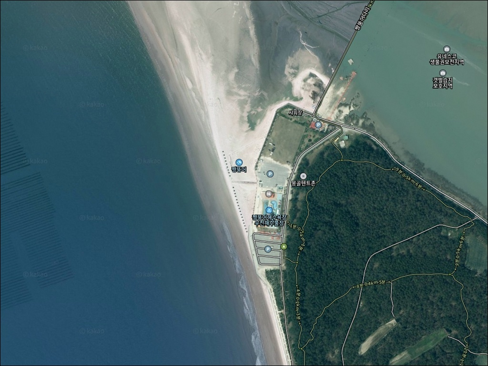
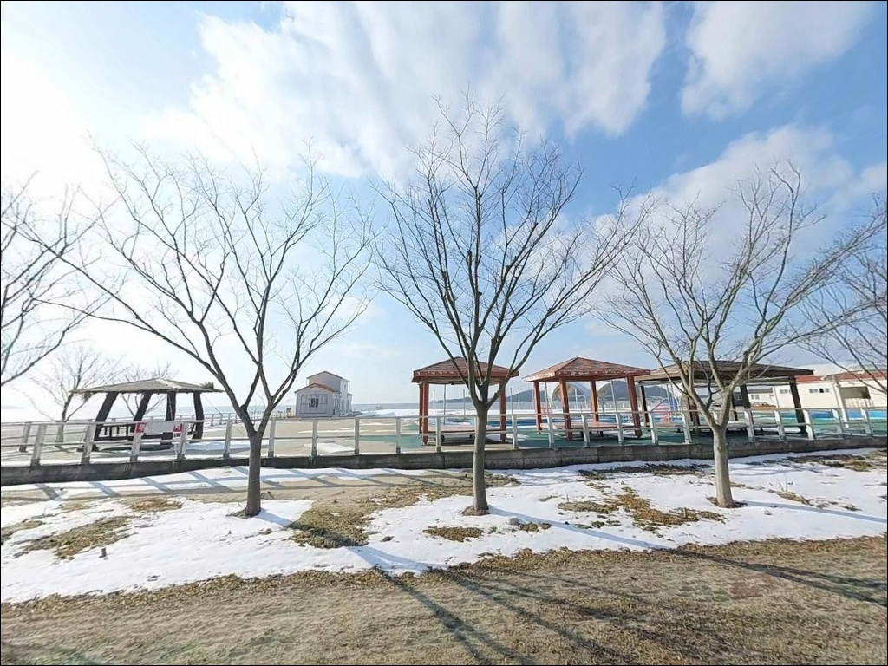
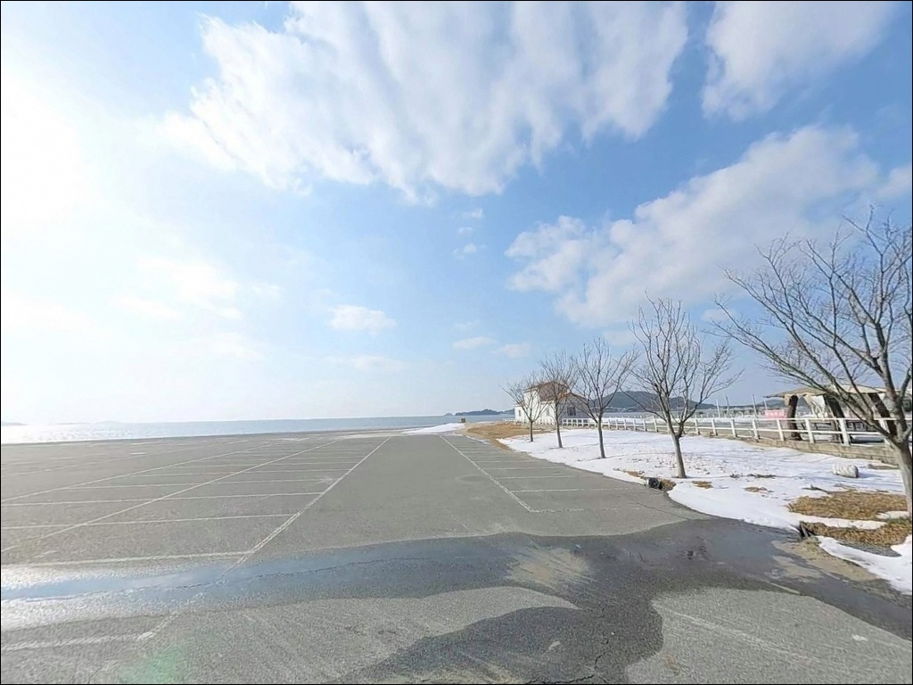
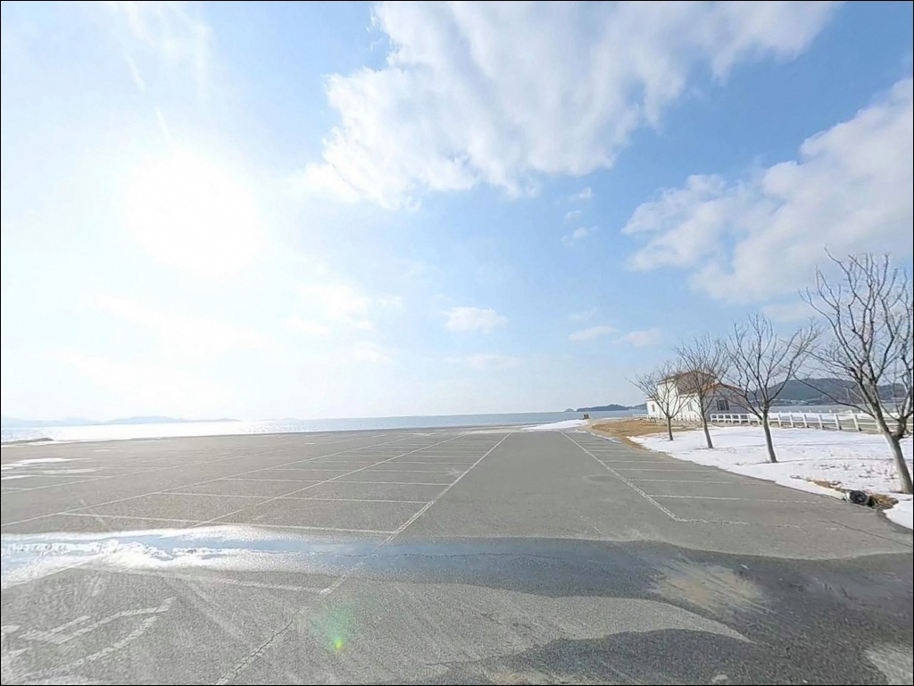
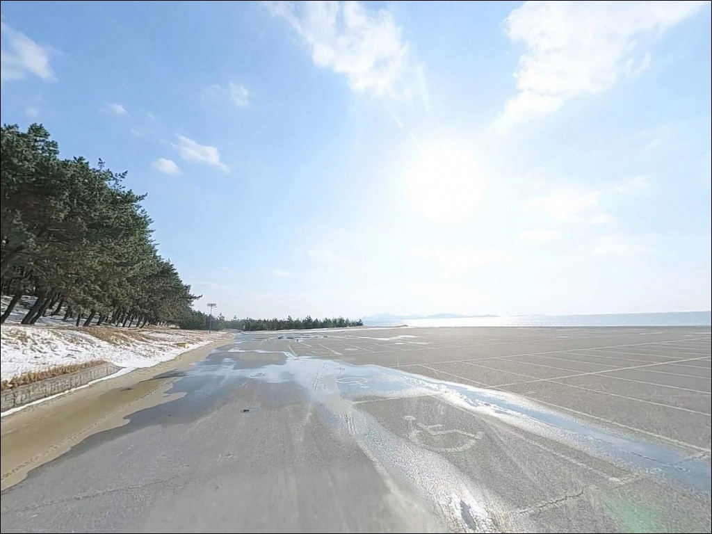
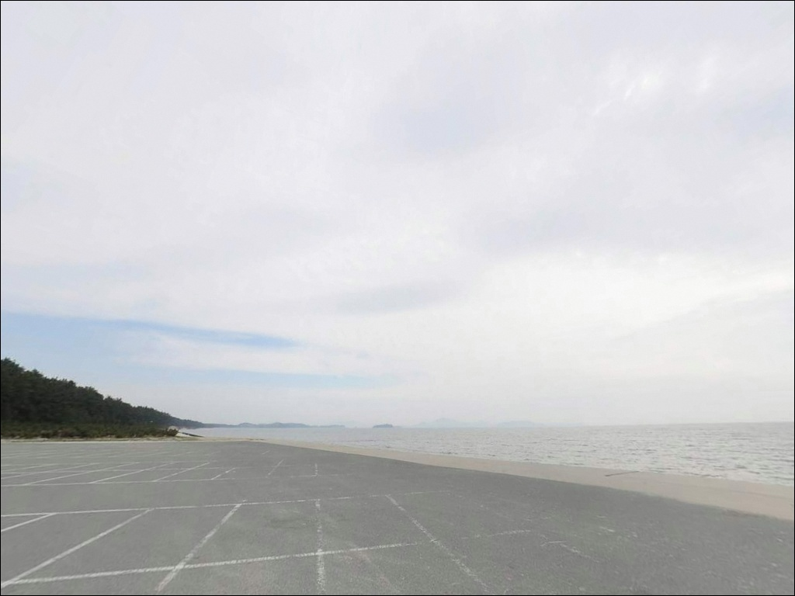
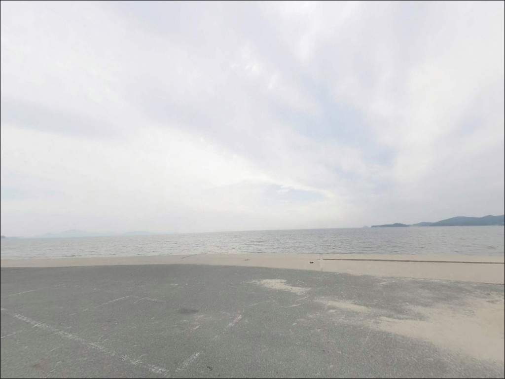
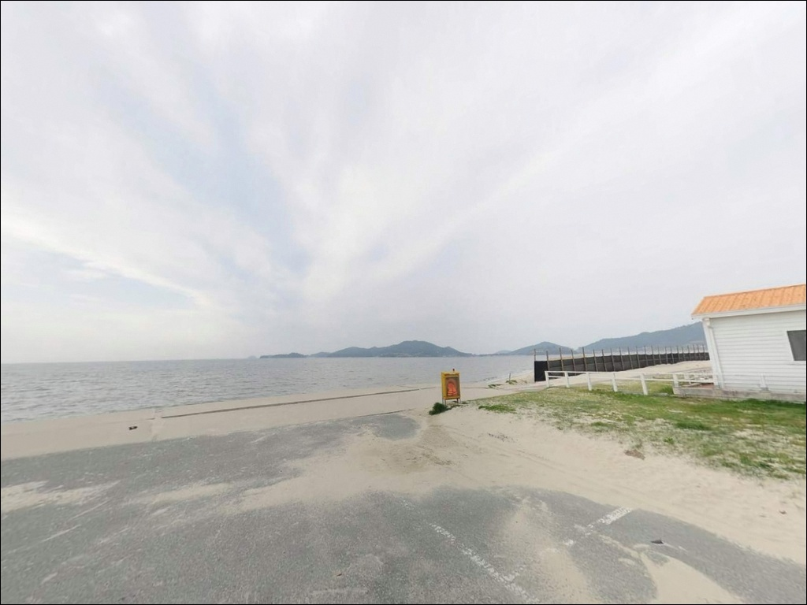
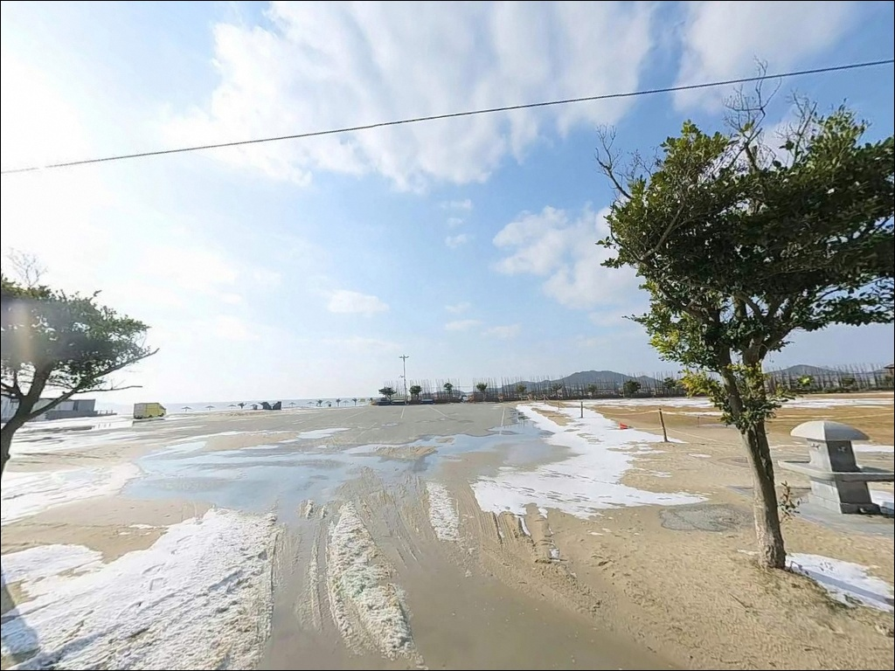

짱뚱어해수욕장, 증도 전남 신안군 한적한 분위기 속 차박, 낚시를 함께 하기 좋은 곳
이 페이지에는 광고(제휴 링크 포함)가 있으며, 광고 링크를 통해 구매하면 운영자가 판매 수익 또는 수수료를 받을 수 있습니다. 포인트 사진: 카카오맵 스카이뷰·로드뷰. 이 페이지의 지도·사진 이미지는 카카오맵의 실제 서비스 이미지와 다를 수 있습니다.


포인트 안내
짱뚱어해수욕장
전남 신안군 증도면 대초리 산 220-2
물때 확인 없이 짱뚱어해수욕장을 찾으면
드넓은 갯벌만 보고 돌아오는 상황을
맞닥뜨립니다.
간조 시에는 갯벌이 수백 미터 노출되는 지형이라
만조 전후 2~3시간이
낚시 가능한 수심 구간을 확보할 수 있는
핵심 타이밍입니다.
전남 신안군 증도는 슬로시티·람사르습지로 지정된
청정 갯벌 섬입니다.
짱뚱어해수욕장은 증도 서쪽 해안에 위치하며
백사장과 갯벌이 이어지는 완만한 서해 해변입니다.
인근 470m 목교인 짱뚱어다리는
갯벌 위를 걷는 생태 탐방로로,
방파제·구조물 낚시보다
갯벌 원투와 생활낚시 중심의 성격이 강한 포인트입니다.
이 글은 짱뚱어해수욕장의
지형 조건과 물때 기반 낚시 진입 여건,
차박 환경에 집중합니다.
조황 단정이나 특정 어종 보장은
이 글의 범위에 포함되지 않습니다.

1. 진입 동선과 주차 환경
증도대교가 개통된 이후
차량으로 섬에 직접 진입할 수 있게 됐습니다.
육지에서 증도대교를 건너면
섬 내부 포장도로를 따라
짱뚱어해수욕장 주차장까지
이어지는 동선이 비교적 단순합니다.
섬 내부 도로는 증도 규모의 섬답게
폭이 좁은 구간이 포함되어 있습니다.
대형 캠핑카나 차체가 넓은 차량은
일부 구간에서 교행이 어려울 수 있어
출발 전 내비게이션 경로상
도로 폭을 한 번 더 확인하는 편이 좋습니다.
승용차와 중형 SUV 기준으로는
진입 자체에 큰 어려움이 없는 편입니다.
짱뚱어해수욕장 전용 공영 주차장은
해변 바로 앞에 위치하며 규모가 넉넉합니다.
복수의 주차 구역이 마련돼 있어
회차와 주차 자체에는 여유가 있습니다.
어선이나 어구가 없는 해수욕장 특성상
주차 후 해변까지의 접근 동선이 짧은 것이
이 포인트의 장점입니다.

2. 차박 환경 평가 및 야간 체류 여건
짱뚱어해수욕장 공영 주차장은
해변 바로 앞에 붙어 있어
차에서 내리면 곧장 바다로 이어지는 위치입니다.
비수기 야간에는 유동 인구가 줄고
조용한 편이라는 방문자 후기가 있습니다.
이 포인트의 주차장 구조는
비수기 기준으로 차박 후보지로 활용할 수 있는
기본 조건은 갖추고 있습니다.
다만 성수기(7~8월)와 특별 행사 기간에는
주차장 자체가 혼잡해질 수 있고,
해수욕장 입구 쪽 가로등 영향으로
완전한 어둠 속 야간 체류를 기대하기는 어려운 환경입니다.
슬로시티 관광지 특성상
주말과 성수기 방문은 평일·비수기와 환경이 크게 달라집니다.
해수욕장 구조상 외해 방향으로 열린 지형이라
바람이 강한 날에는 야간 체류 시
풍향 변화에 대비가 필요합니다.
인근 해송숲이 방풍 역할을 일부 하지만,
서해 기상 특성상 갑작스러운 방향 변화가
생기는 경우도 있습니다.


3. 주변 편의시설 및 인프라 현황
짱뚱어해수욕장 구역 내에는
화장실과 샤워시설이 갖춰져 있습니다.
샤워시설은 여름 성수기 위주로 운영되며,
주차장과 화장실은 연중 이용이 가능합니다.
낮 시간대 체류 편의는 양호한 편이며,
기본 시설 측면에서 빈약한 포인트는 아닙니다.
증도는 슬로시티 지정 지역이라
대형 편의점 체인보다는
소규모 상점 중심으로 운영됩니다.
반경 3km 이내 증도면 읍내 방향에
짱뚱어탕 전문 식당이 확인됩니다.
(이학식당 061-271-7800 / 고향식당 061-271-7533)
방문 전 영업 여부를 전화로 먼저 확인하는 편이 좋습니다.
식수, 얼음, 낚시 소품 등 필요한 물품은
증도대교를 건너기 전 육지(지도읍 인근)에서
미리 준비해 들어가는 방식이 현실적입니다.
섬 내부에서 낚시 소품을 구하기 어려울 수 있으므로
완전 자급 체제로 진입하는 것이 기본 준비입니다.

4. 방문 전 반드시 챙겨야 할 준비사항
이 포인트 방문 전 가장 먼저 확인할 것은
물때입니다.
서해 갯벌 특성상 조석 간만의 차가 크고,
간조 시에는 해변 앞 갯벌이 드넓게 노출됩니다.
바다타임에서 신안군 증도 기준 물때를 확인하고,
만조 전후를 기준으로 출발 시각을 맞추는 것이
이 포인트 공략의 기본 전제입니다.
갯벌도립공원·람사르습지·국가습지보호지역·
유네스코 생물권보전지역으로
다중 지정된 구역이라는 점도 인지해야 합니다.
갯벌 내 지정 체험구역 외 단독 진입은
생태계 보호 원칙상 지양해야 하며,
해변에서의 원투낚시와
갯벌 직접 진입은 구분해서 판단해야 합니다.
현장 안내판을 먼저 확인하는 것이 기본입니다.
야간 낚시 시에는 헤드랜턴이 필수입니다.
해변 쪽은 가로등 조명이 미치지 않는 구간이 있어
개인 조명 없이는 시야 확보가 어렵습니다.
서해 갯벌 지형 특성상 썰물 시
이동 중 미끄럼 위험도 있어
장화 착용과 구명조끼 준비가 기본 안전 조건입니다.

5. 물때에 따라 달라지는 낚시 가능 구간
짱뚱어해수욕장의 낚시 여건은
방파제나 직벽 구조가 없는
완만한 갯벌·사빈 지형에서 출발합니다.
수심이 전반적으로 얕고 완만하게 형성되며,
간조 시에는 갯벌 노출 범위가
낚시 자리 자체를 뒤로 밀어내는 구조입니다.
방파제 중심 낚시를 기대하면
실망할 가능성이 높은 포인트입니다.
낚시가 가능한 구간은 두 갈래로 나뉩니다.
첫 번째는 해수욕장 서쪽 갯바위 구간입니다.
완만하게 형성된 갯바위 주변으로
만조 전후에는 원투낚시와 찌낚시가
가능한 수심이 형성됩니다.
두 번째는 해변 북단 방축리 방향 해안으로,
갯바위 구간이 있다는 낚시인 언급이 있으나
별도 조황 확인이 필요합니다.
갯벌과 수로 경계부에서는
만조 전후 조류가 살아 있는 시간대에
농어 루어를 시도해 볼 만한 여지가 있습니다.
단, 구조물이 없는 열린 해변 특성상
포인트 설정이 쉽지 않은 편입니다.
출조 전에 "증도 낚시 조황"으로
최신 정보를 꼭 검색해 보시기 바랍니다.


6. 포인트에 어울리는 낚시 스타일
이 포인트에서 가장 현실적인 낚시는
만조 전후 원투낚시입니다.
고운 모래와 갯바위가 혼합된 지형 특성상
채비를 멀리 던져
바닥층 어종을 노리는 방식이 지형 구조와 잘 맞습니다.
이 지형에서 기대해 볼 수 있는 어종으로는
붕장어, 숭어, 망둥어 계열이 있습니다.
서해 가을철에는 숭어 무리의 회유가
기대되는 시기도 있습니다.
모래 바닥이 고른 구간에서는
도다리나 보리멸을 대상으로 한
가벼운 원투 채비도 어울립니다.
가족 단위 생활낚시로 접근하는 방식이
이 포인트의 지형 성격과 가장 잘 맞습니다.
만조 시 수로가 형성되는 구간에서는
농어 루어를 노려볼 만합니다.
갯벌과 해변이 만나는 수로 경계부는
조류가 흐를 때 농어가 머무는 자리가 되기도 하는 구조입니다.
다만 이 포인트에서 루어낚시는
물골 방향을 먼저 파악하는 것이 선행 조건이며,
포인트 설정이 어렵다고 느껴지면
이동식으로 탐색하는 방식이 효율적입니다.

7. 짱뚱어해수욕장이 여의치 않을 때 플랜 B
증도에서 방파제 구조가 있는
본격 낚시 여건을 원한다면
증도대교 아래 구간이 첫 번째 대안입니다.
두 수역이 만나는 조류 소통 구간으로
감성돔과 농어 포인트로 알려진 곳입니다.
짱뚱어해수욕장에서 이동 거리가 짧아
동선 낭비 없이 전환이 가능합니다.
증도대교를 건너 육지 쪽으로 나온 뒤
지도읍 방향으로 이동하면
염산면 일대 선창·방파제 구간에 닿습니다.
증도 본섬보다 방파제 구조가 확인된 곳으로,
원투·루어 복수 방식의 운용이 가능한 포인트입니다.
증도 방문 전후로 묶어 이동하기 좋은 동선입니다.
우전항은 짱뚱어해수욕장 남단에 위치하며
해변보다 다소 깊은 수심 구간과
간단한 방파제 구조를 갖추고 있습니다.
짱뚱어해수욕장 낚시 여건이
물때 맞추기에 실패했을 때
바로 이동해 볼 수 있는 가장 가까운 대안입니다.

조용한 갯벌 섬에서
물때 맞춰 하룻밤 머무는 낚시 여행
방파제 감성돔이나 복잡한 채비 공략을
기대하고 찾는 포인트는 아닙니다.
짱뚱어해수욕장은 서해 갯벌 해변에서
가능한 낚시를 현실적으로 즐기면서
청정 슬로시티 섬의 분위기를
함께 누리는 스타일의 방문자에게 맞는 곳입니다.
원투낚시나 가벼운 루어 시도를 계획하는 낚시인이라면
물때 확인, 완전 자급 준비, 진입 전 도로 확인,
이 세 가지가 방문 성패를 가르는 조건입니다.
반대로 방파제 구조와 깊은 수심을 원한다면
증도대교 아래나
육지 방파제 포인트가 더 맞는 선택입니다.
비수기 평일, 물때를 맞추고
자급 준비를 갖춘 낚시인에게는
드넓은 갯벌 풍경 옆에서
채비를 던지고 하룻밤 차박으로 머무는
증도만의 조용한 시간을 얻을 수 있는 곳입니다.